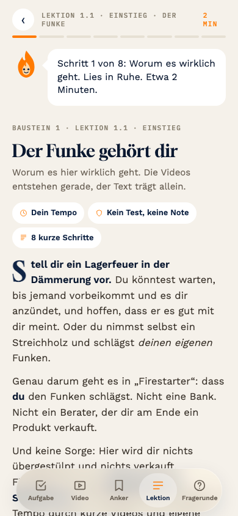
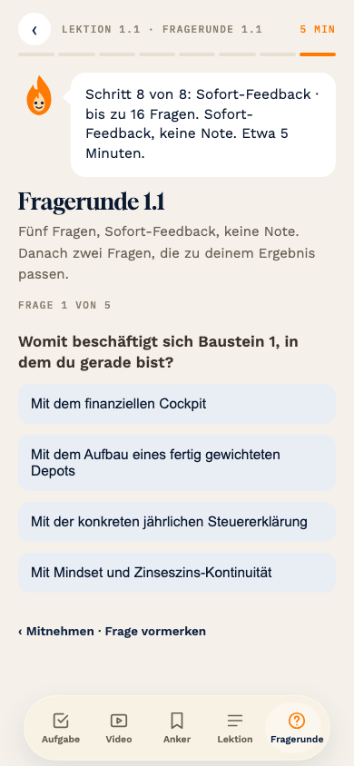

Was stört: Sprechblase, Segmentleiste, Zeile, Titel, drei Pillen und Text drängen sich auf einem Bildschirm.
Firestarter · Lektion von innen · Runde 2 · 22.10.2026
Deine Rückmeldung zu Stand 8: zu voll, man weiß nicht, wo man hinschauen soll. Darum hier neue Mockups für denselben Inhalt (Lektion 1.1, Schritt 1 und Schritt 3) und für die Fragerunde. Didaktik, Struktur und die acht Schritte bleiben. Verändert ist nur, wie es aufgebaut und gezeigt wird.

Was stört: Sprechblase, Segmentleiste, Zeile, Titel, drei Pillen und Text drängen sich auf einem Bildschirm.

Was stört: keine Farbe für richtig und falsch, die Reiter unten bleiben bedienbar, Sprechblase und Titel vor der ersten Frage.
Worum es hier wirklich geht.
Stell dir ein Lagerfeuer in der Dämmerung vor. Du könntest warten, bis jemand vorbeikommt und es dir anzündet, und hoffen, dass er es gut mit dir meint. Oder du nimmst selbst ein Streichholz und schlägst deinen eigenen Funken.
Genau darum geht es in „Firestarter": dass du den Funken schlägst. Nicht eine Bank. Nicht ein Berater, der dir am Ende ein Produkt verkauft.
Drei Momente nacheinander. Erst nur die Flamme, dann die Zeile „Schritt 1 von 8 · Worum es wirklich geht · etwa 2 Minuten", dann rückt die Flamme nach oben und der Titel mit dem Text erscheint. Keine Sprechblase, keine Pillen, kein Symbol. Fortschritt nur als „1 / 8" oben rechts.
Mehr Karten statt einer vollen Seite. Schritt 3 (Video, drei Begriffe, Kern, Aha) wird zu vier Karten zum Wischen: Video, Finanzwissen, Vermögensaufbau, Selbstbestimmung, dann Kern und Aha. Die acht Schritte bleiben, nur innerhalb eines Schritts wird gewischt. Oben die kleine Flamme, die sich mit dem Fortschritt füllt.
Finanzwissen. Du kannst nichts steuern, was du nicht verstehst. Solange Geld, Zinsen und Börse eine Black Box sind, entscheiden andere.
Vermögensaufbau. Wissen allein füllt kein Depot. Es wird erst wertvoll, wenn es in Handlung übergeht.
Selbstbestimmung. Nicht reich werden um des Reichtums willen, sondern frei werden in deinen Entscheidungen.
Eine Seite, aber mit Luft. Keine Kästen für den Text, nur dünne Abschnittszeilen: Grundlage, Ziel, Sinn, Merksatz. Nur der Merksatz bekommt den orangen Strich. Fortschritt als Ring um die kleine Flamme oben rechts. Ein Blick, eine Ordnung.
Buchstaben, Prüfen, Farbe. Antippen, dann „Prüfen" wie früher. Falsch wird rot und wackelt, die richtige Antwort leuchtet grün und pulsiert. Oben Stufe, Frage und Punktestand, dazu ein dünner Balken. Die Reiter unten sind grau mit Schloss, bis die Lektion fertig ist.
Sofort beim Antippen. Frage groß in Serif, Antworten als ruhige Zeilen ohne Kästen. Der Tipp entscheidet: richtig wird die Zeile grün und der Weiter-Knopf auch; falsch wird sie rot und wackelt, die richtige erscheint grün. Fortschritt als fünf Striche, die sich grün oder rot färben. Keine Reiter unten, erst nach der Lektion.
Grüner Haken wie früher. Zum Schluss legt sich der grüne Kreis mit Haken über die Seite, darunter das Ergebnis und der Sprung zur nächsten Lektion. Jetzt erst werden die Reiter unten frei: wer später etwas nachschlagen will, springt direkt zu Video, Anker oder Aufgabe.
Die ehrlichste Art, Vertrauen aufzubauen: sagen, wo die Grenzen liegen.
Chronologisch. Beim ersten Durchgang sind die Reiter grau mit kleinem Schloss, nur der aktuelle Typ leuchtet. Antippen zeigt „Öffnet sich nach der Lektion". Weiter geht es nur mit „Weiter" oder Wischen.
Du hast Lektion 1.1 abgeschlossen. Tipp unten auf Video, Aufgabe oder Anker, um direkt dorthin zu springen.
„Ich nehme meine Finanzen jetzt in die Hand, weil ich nicht mehr auf andere warten will."
Frei zum Nachschlagen. Nach dem Abschluss sind alle fünf Reiter bedienbar. Das Schloss verschwindet, der Haken oben rechts zeigt, dass die Lektion fertig ist.